Transformando a experiência Pix no Banco Daycoval
Banco Daycoval · UX Specialist · 2025 – Atual
O Banco Daycoval é uma das principais instituições financeiras brasileiras, com forte atuação em crédito, consignado, tesouraria e soluções financeiras para pessoas físicas e empresas. Com aproximadamente 2,3 milhões de clientes, o banco está entre os maiores bancos do país e vive um momento de evolução digital, investindo na modernização de seus produtos e na maturidade dos processos de experiência do usuário.
Setor
Serviços Financeiros
Plataformas
Mobile App, Web e Backoffice
Minha atuação
UX Specialist — Product Design, UX Research e Discovery
Contexto
Minha atuação no Banco Daycoval é bastante abrangente, conectando diferentes áreas do negócio para transformar necessidades dos usuários em oportunidades para os produtos digitais. Trabalho diariamente em parceria com equipes de Negócio, Produto, Tecnologia, Segurança e Compliance, atuando como elo entre as necessidades dos clientes e os objetivos estratégicos da empresa.
Ao ingressar no banco, meu principal objetivo foi fortalecer a cultura de UX e elevar a maturidade dos processos de Design e Produto. Para isso, implementei práticas estruturadas de pesquisa, discovery e validação, criando processos que permitissem ao time tomar decisões baseadas em evidências e não apenas em percepções.
Durante esse período estruturei o processo de Testes de Usabilidade, desenvolvendo roteiros padronizados, materiais de apoio, critérios de avaliação e ferramentas para monitoramento das sessões, utilizando o Maze para pesquisas moderadas e não moderadas com clientes reais.
Também fortaleci a frente de pesquisa por meio da criação de templates de Benchmark, boas práticas para análise de mercado e documentação dos principais aprendizados. Como próxima evolução, iniciei a estruturação de um processo consistente de Desk Research, tornando a pesquisa um pilar contínuo dentro da equipe.
Paralelamente, participei da evolução de diferentes funcionalidades do aplicativo, como Conta Corrente, Cartão de Crédito e, principalmente, do Pix, uma funcionalidade estratégica para o banco.
O desafio desse projeto era modernizar toda a experiência do Pix respeitando as limitações técnicas, regulatórias e operacionais do ambiente existente. Como a implementação seria realizada em diferentes esteiras de desenvolvimento, era necessário criar uma solução que permitisse uma evolução gradual sem comprometer a experiência dos clientes.
Como estratégia, iniciamos o redesenho pela criação de uma Home do Pix, estabelecendo uma nova arquitetura para organizar toda a funcionalidade. Essa decisão também deu origem a uma estratégia maior para o aplicativo: permitir que cada grande funcionalidade possuísse sua própria página inicial, organizando melhor as jornadas dos usuários e facilitando a evolução futura do produto.
O principal desafio era evoluir uma das funcionalidades mais importantes do aplicativo conciliando inovação, restrições técnicas e regras regulatórias já estabelecidas pelo banco.
Além disso, a implementação aconteceria de forma gradual, exigindo que novos fluxos coexistissem com funcionalidades já disponíveis em produção, sem gerar inconsistências para os usuários. Os principais desafios identificados foram:
- Evoluir uma funcionalidade crítica sem comprometer a experiência atual.
- Conciliar regras de negócio existentes com novas oportunidades identificadas durante a pesquisa.
- Alinhar expectativas entre Produto, Negócio, Tecnologia, Segurança e Compliance.
- Compreender profundamente os fluxos existentes antes de propor mudanças.
- Construir uma arquitetura escalável para futuras funcionalidades do aplicativo.
- Garantir que a implementação pudesse acontecer de forma incremental.
Um mosaico com telas e momentos do projeto.
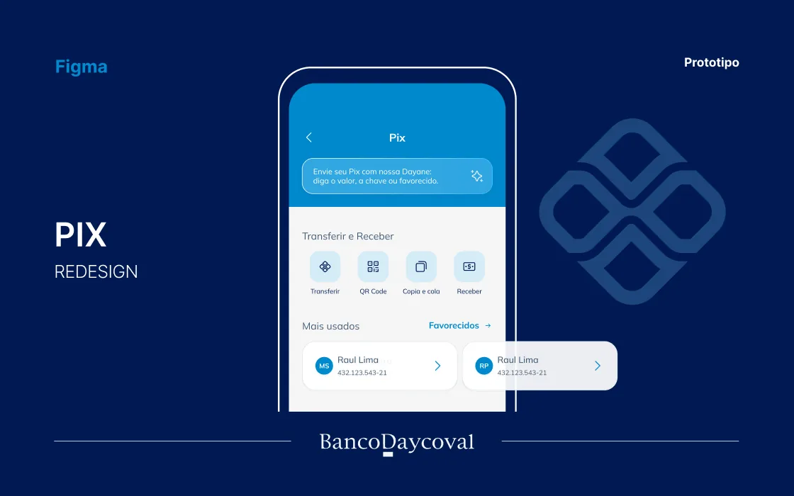
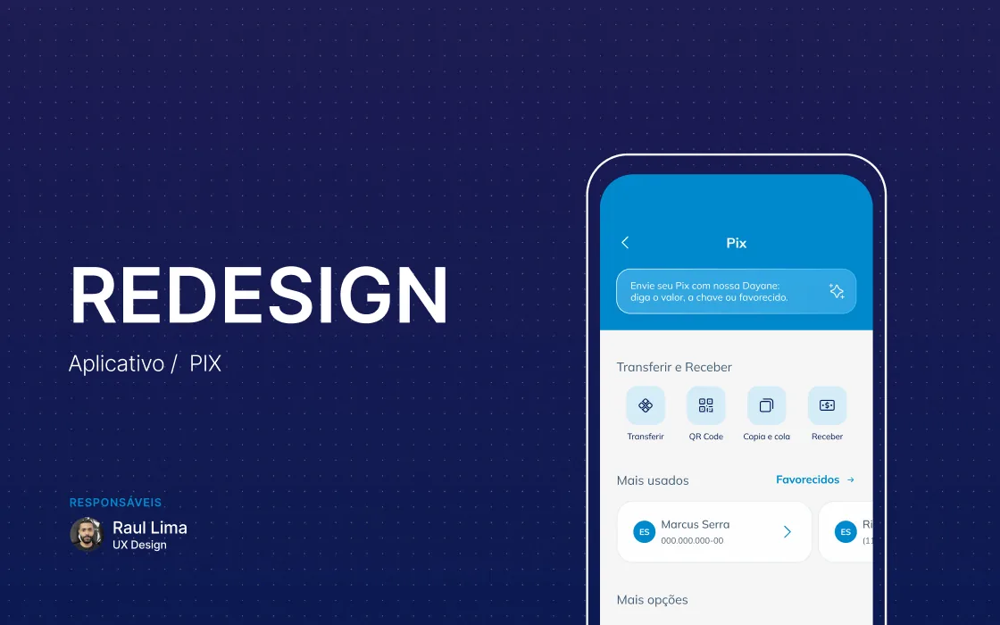
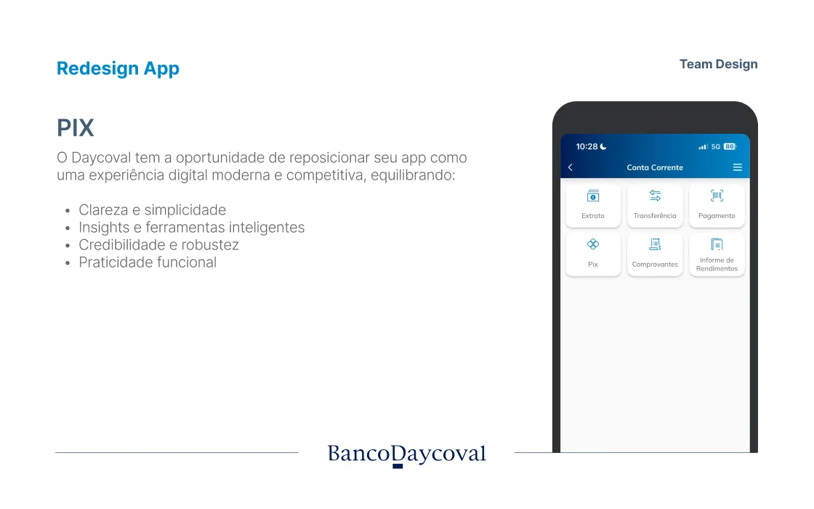
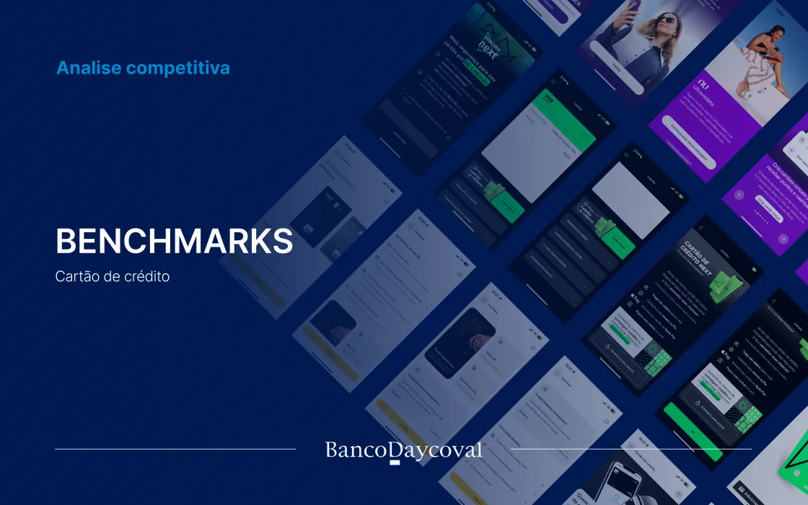
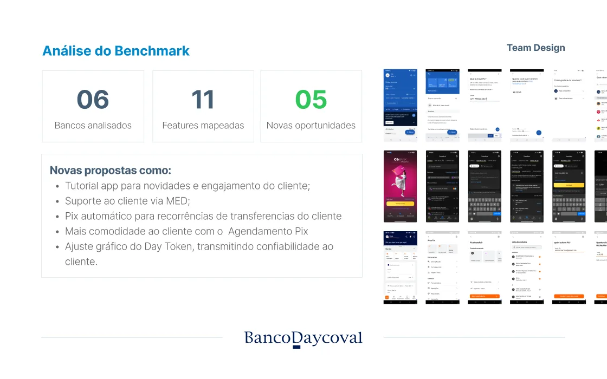
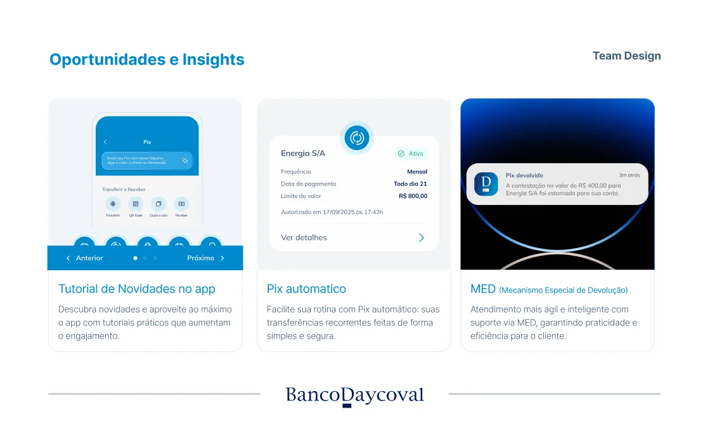
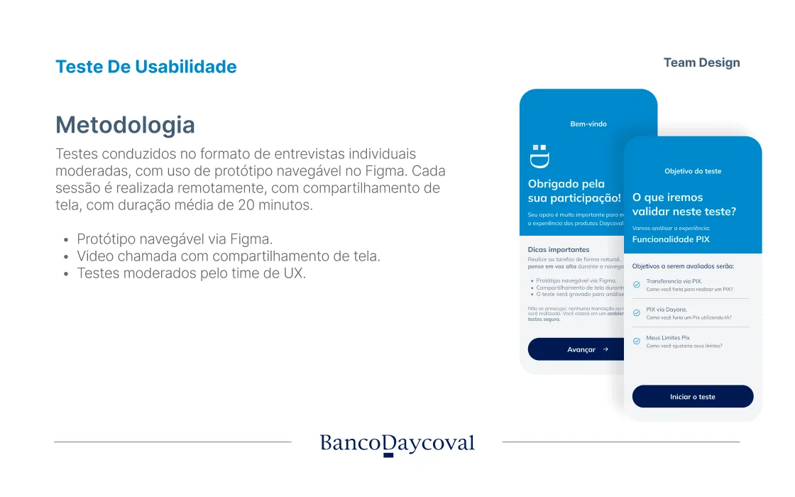
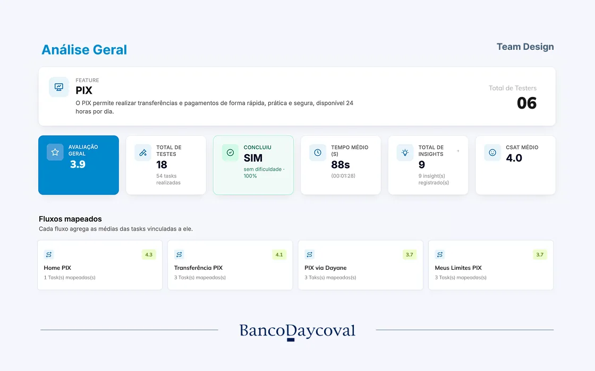
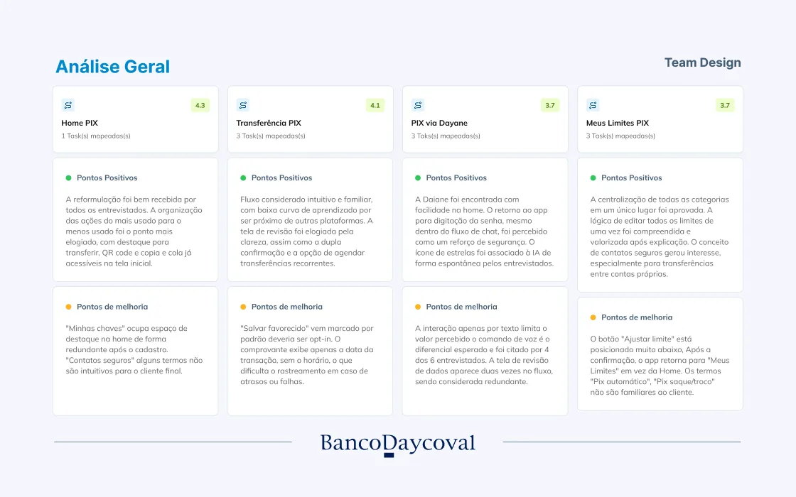
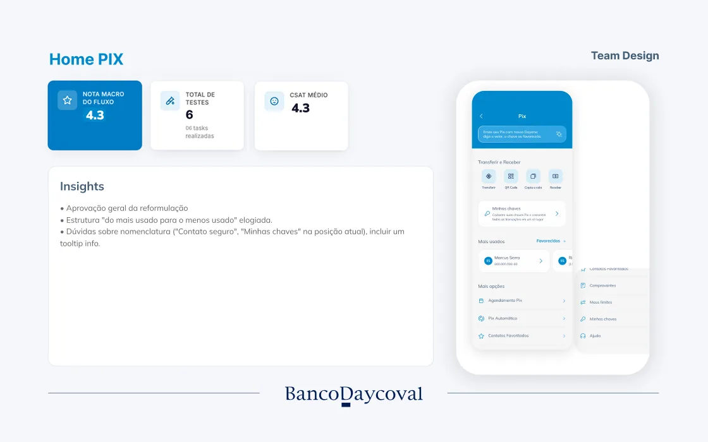
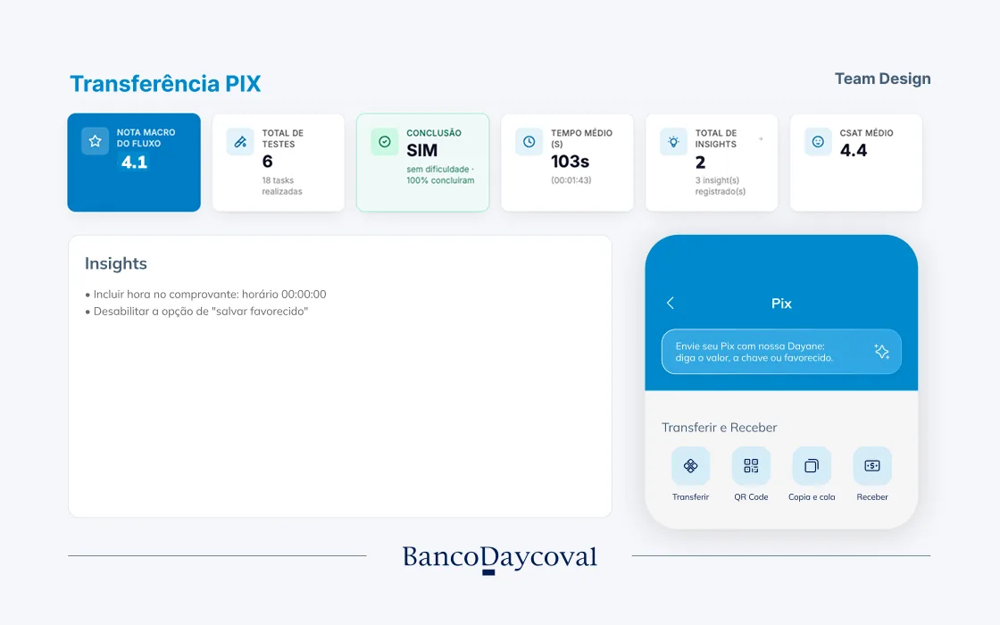
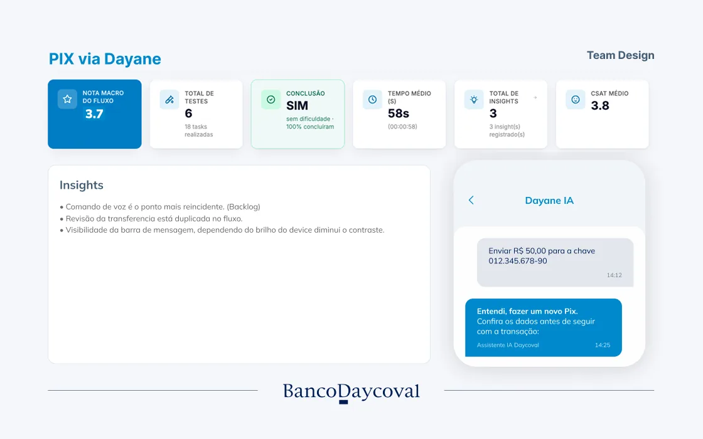
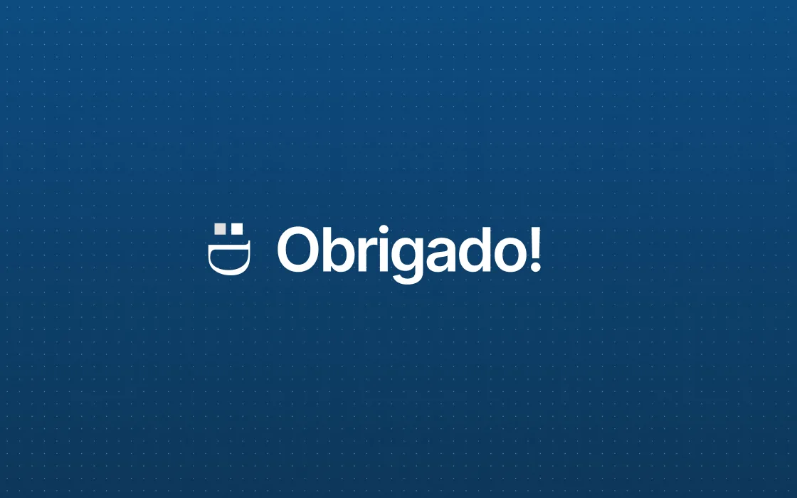
O projeto seguiu um fluxo estruturado de pesquisa, validação e entrega, conectando descoberta, evidências e acompanhamento do desenvolvimento.
Pesquisa e entendimento
Imersão para compreender o cenário atual do Pix dentro do banco, com pesquisas internas, entrevistas com stakeholders e levantamento das principais dores dos clientes e das áreas de negócio.
- Levantamento de requisitos
- Entrevistas com stakeholders
- Pesquisa de contexto
- Mapeamento de dores
Benchmark e oportunidades
Análise comparativa dos principais bancos e fintechs do mercado para identificar padrões, oportunidades e boas práticas, direcionando decisões de produto e discussões estratégicas.
- Benchmark competitivo
- Mapeamento de oportunidades
- Insights de mercado
- Priorização das melhorias
Ideação e prototipação
Soluções construídas com os times de Produto e Design em sessões colaborativas de ideação e Design Critique, com alinhamentos técnicos para validar a viabilidade antes dos testes.
- Wireframes
- Protótipos de alta fidelidade
- Design Critiques
- Validação técnica
Validação e alinhamento
Apresentações para Negócio e stakeholders compartilhando aprendizados de pesquisas, benchmarks e testes de usabilidade. Os feedbacks refinaram a solução antes do desenvolvimento.
- Testes de usabilidade
- Apresentação dos insights
- Refinamentos
- Aprovação da solução
Handoff e acompanhamento
Handoff para o time de desenvolvimento, documentando especificações de interface, comportamento dos componentes e regras de negócio, com acompanhamento da implementação para garantir consistência.
- Especificações funcionais
- Documentação
- Design QA
- Suporte ao desenvolvimento
Um dos momentos mais desafiadores deste projeto foi equilibrar os insights obtidos nas pesquisas com usuários e as expectativas das áreas de negócio.
Durante o redesenho da experiência de gerenciamento dos limites do Pix, os testes de usabilidade mostraram que os clientes tinham dificuldade para compreender a quantidade de opções disponíveis e, em muitos casos, não entendiam claramente como os limites funcionavam. No entanto, a expectativa inicial da superintendência era manter a estrutura existente, por estar alinhada às regras e processos já estabelecidos pelo banco.
Ao invés de simplesmente seguir esse direcionamento, busquei reunir mais evidências para fundamentar uma decisão mais consistente. Trabalhei em conjunto com o responsável pelo produto Pix, a equipe de Segurança e outras áreas envolvidas para compreender as restrições técnicas, regulatórias e operacionais da funcionalidade. Paralelamente, utilizei os resultados do benchmark para demonstrar que os principais bancos do mercado estavam simplificando a configuração dos limites, reduzindo a quantidade de opções e tornando a experiência mais intuitiva.
Essa discussão envolveu diversas áreas, como Produto, Negócio, Tecnologia, Segurança e Compliance. Foram necessárias várias rodadas de alinhamento, já que uma alteração aparentemente simples na interface impactava diretamente regras internas do Pix, serviços e fluxos de implementação.
Ao longo dessas conversas, ficou claro que a melhor solução não seria atender apenas à visão do negócio ou apenas aos resultados da pesquisa, mas encontrar um equilíbrio entre as necessidades dos usuários e as restrições do banco. Em conjunto com o time de Produto, avaliamos diferentes alternativas até chegarmos a uma proposta que reduzisse a complexidade da jornada sem comprometer os requisitos regulatórios e operacionais.
Como resultado, entregamos uma experiência mais simples, com menos interações para o cliente, alinhada aos padrões dos principais players do mercado e preparada para evoluir de forma escalável.
Mais do que redesenhar uma funcionalidade, este projeto reforçou a importância de utilizar pesquisas, benchmarks e dados como instrumentos para influenciar decisões e construir consenso entre diferentes áreas. Em um ambiente altamente regulado como o setor financeiro, o sucesso do projeto dependia não apenas da qualidade da solução proposta, mas também da capacidade de comunicar seu valor e engajar todos os stakeholders em torno da mesma visão.
Home Pix
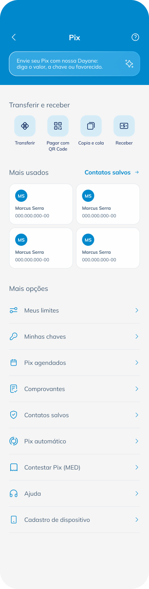
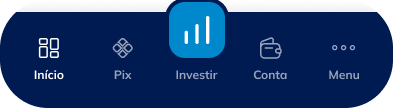
Limites Pix
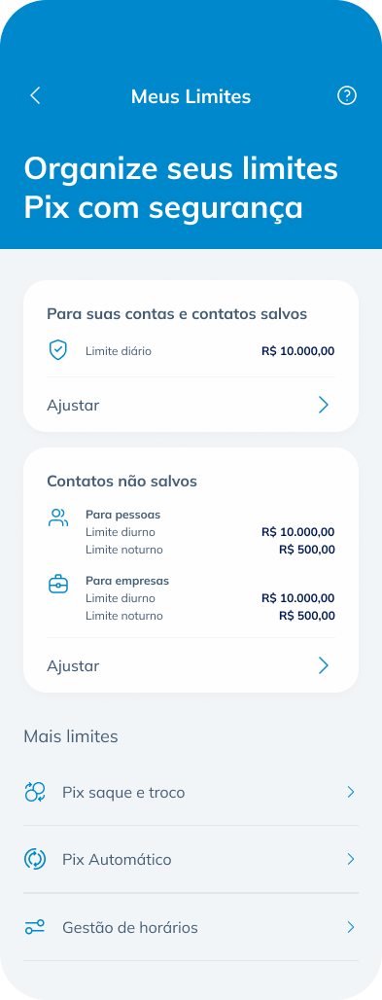
Configurar Limites
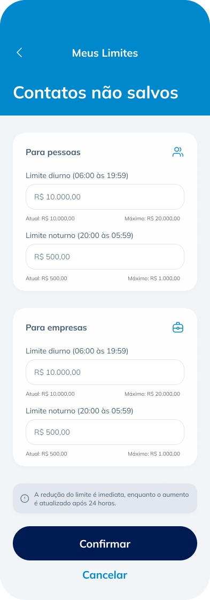
Confirmação
O projeto contemplou o redesenho completo da experiência do Pix dentro do aplicativo do Banco Daycoval, incluindo a nova Home do Pix e a evolução das principais jornadas da funcionalidade, com a mesma estrutura levada também para o internet banking.
Embora a implementação esteja sendo realizada de forma gradual, o projeto já gerou impactos importantes para o produto e para a maturidade do UX dentro do banco.
🚀 Modernização da experiência Pix
A nova arquitetura aproximou a experiência do Daycoval dos principais bancos digitais do mercado, criando uma navegação mais organizada, intuitiva e preparada para futuras evoluções.
⭐ 3,9/5 de satisfação
na avaliação dos usuários nos testes de usabilidade realizados com clientes reais utilizando o Maze.
✅ 9 insights validados
para a evolução da jornada do Pix, utilizados para refinar a solução antes da implementação.